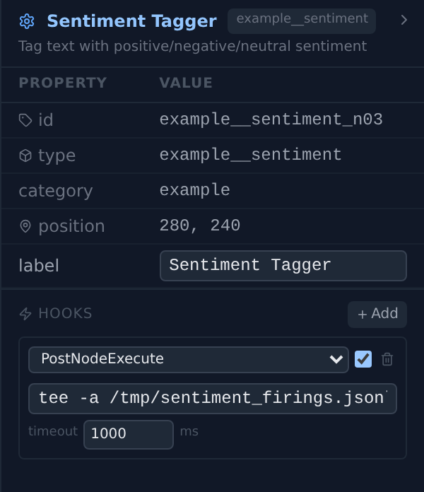

5Graph Execution Engine
Fire-on-input ready-queue scheduler — no form-specific code paths for DAG vs. loop vs. mixed.
The GraphExecutor is one while-loop over a ready queue: pop a node, fire it, route its outputs into downstream port slots, enqueue whoever became ready — repeat until nothing is ready or something says stop. Execution order is declared nowhere; data arriving is the only trigger. The only node types the engine special-cases are the two loop pivots: popping an iterIn opens an iteration (step_start), firing an iterOut closes it — step counter, checkpoint, nav_step broadcast, then the loop-carry transfer into the paired iterIn, which re-enters the queue and the cycle runs again. Everything else on this page — readiness, hooks, state containers, signals, multi-scope, termination — hangs off that loop.
Design docs: Graph Executor · Loop Control · State Containers
1. Overview
The GraphExecutor is the primary execution engine. It replaces a linear DAG executor with a dataflow model where data drives execution order. This naturally supports:
- DAG workflows — single forward pass
- Loops —
iterOutfeeds back toiterIn; run-start values wire into iterIn's init side (ADR-dataflow-008) - Mixed patterns — both in the same graph
Ready queue: [entry₁, entry₂, ...]
│
▼
Pop node → fire → propagate outputs → enqueue ready targets
│ │
└───────────────────────────────────────┘
(until queue empty or terminated)
2. Core Concepts
| Concept | Description |
|---|---|
| NodeInstance | Live node with id, type, config, persistent state, pending_inputs, and (iterIn only) init_port_cache |
| Entry node | Non-iterIn node with no incoming edges and no required input ports — queued at run start |
| Ready queue | FIFO queue of node IDs whose required inputs are all satisfied |
| Pending inputs | {port_name: value} buffer — cleared after node fires |
port_slots |
iterIn-only dict — one slot per synthesised port (init_<X> / iterout_<X>); written by run-start init edges and the iterOut transfer, read on every iterIn fire; persist=false slots clear after the fire (ADR-dataflow-008) |
| Adjacency map | {source_id: [outgoing edges]} — for output propagation |
| Access grant index | {node_id: {container_ids}} built from graph.access_grants (ADR-dataflow-004, replaces "state edges") |
| Step counter | Incremented each time iterOut fires (one per iteration) |
| Env panel / URL overrides | Per-runner maps consulted before the global registry so worker-pool eval can route to its own tagged env subprocess (ADR-eval-002) |
3. Execution Algorithm
3.1 Initialization
# 1. Merge hooks from 3 sources: global → graph → node
merged = merge_hooks(global_hooks, graph.hooks, extract_node_hooks(graph.nodes))
# 2. Flatten composites (expand subgraphs into flat graph)
graph, flatten_map = flatten_graph(graph)
# 3. Build state containers + access-grant index
containers = build_containers(graph.containers)
for ag in graph.access_grants:
access_grant_index[ag.node_id].add(ag.container_id)
# 4. Build node instances + adjacency map
for node_def in graph.nodes:
nodes[node_def.id] = NodeInstance(id=..., type=..., config=...)
for edge in graph.edges:
adjacency[edge.source].append(edge)
# 5. Entry discovery — three structural conditions:
# type != "iterIn" AND no incoming edges AND no required input ports
# validate_graph_connectivity() (graph_def.py) rejects required-but-unwired
# ports at load time, so this rule never silently drops a well-formed entry node.
for node in nodes.values():
if node.type == "iterIn": continue
if node.id in incoming_targets: continue
if _get_required_ports_for_node(node): continue
ready_queue.append(node.id)
# 6. Fire run_start signal (lifetime="run" states reset) + GraphStart hook
broadcast_signal("run_start", {...})
await hook_runner.run_hooks("GraphStart", ...)
Required ports are resolved per-instance: _get_required_ports_for_node merges class-level get_required_inputs(type) with anything _resolve_ports(config) marks optional=False, so configurable-port nodes (ADR-dataflow-003) like iterIn/iterOut/llmCall participate in both entry discovery and readiness.
3.2 Dataflow Loop
while ready_queue and total_firings < max_firings:
await pause.wait()
if stop.is_set(): break
node_id = ready_queue.pop(0)
node = nodes[node_id]
# iterIn: emit step_start before firing so lifetime="step" states see a
# fresh slate for the upcoming iteration
if node.type == "iterIn":
broadcast_signal("step_start", {"step": step_counter + 1})
result = await _fire_node(node, session) # runs Pre/PostNodeExecute hooks
total_firings += 1
# iterOut: per-scope step counter + checkpoint + nav_step + transfer to paired iterIn
# (snippet simplified to single-scope; see §10 — actual code resolves _io_scope_id from
# node.config["pairedWith"], advances _io_scope.step_counter, and only mirrors to
# self.step_counter / checkpoints on the outermost scope)
if node.type == "iterOut":
step_counter += 1
broadcast_signal("step_end", {"step": step_counter})
if containers:
_checkpoints[step_counter] = {cid: c.checkpoint() for cid, c in containers.items()}
await _broadcast_step(session)
if step_counter >= step_budget: break
# ADR-dataflow-006 auto-prefix: iterOut output key X declared in
# iterIn.config.loop_ports routes to paired.pending_inputs["iterout_X"]
for key, val in result.items():
if key in paired_loop_ports:
_route_value_to_port(paired, f"iterout_{key}", val)
ready_queue.append(paired.id)
node.pending_inputs = {} # consumed
# Propagate outputs to downstream — LIST[T] coercion applied at this seam
for edge in adjacency[node_id]:
target = nodes[edge.target]
_route_value_to_port(target, edge.targetHandle, result[edge.sourceHandle])
if _is_ready(target) and target.id not in ready_queue:
ready_queue.append(target.id)
3.3 Readiness Check
A node is ready when:
- Has required ports: all required ports (class-level ∪ instance-resolved) have data in
pending_inputs - All ports optional: fires when ANY data arrives — or, for
iterIn, wheninit_port_cachehas any values even if no loop inputs have arrived yet
def _is_ready(node):
required = _get_required_ports_for_node(node) # class + _resolve_ports(config)
if required:
return all(p in node.pending_inputs for p in required)
if node.type == "iterIn" and node.init_port_cache:
return True
return len(node.pending_inputs) > 0
3.4 Hooks Around Each Firing
_fire_node wraps instance.forward(fire_inputs, ctx) with two user-extensible hooks:
| Hook | When | Actions |
|---|---|---|
PreNodeExecute |
Before forward() |
continue / block / modify (patch pending_inputs) |
PostNodeExecute |
After forward() (success or error) |
continue / modify (replace result on success) |
Graph-level hooks fire at run entry (GraphStart) and on the matching exit path (GraphComplete on success, GraphError on crash). All hooks are fail-open — hook errors never break execution. Full contract — sources, matching, protocol, ordering — in §11.
4. Two-Pivot Iteration (ADR-dataflow-008)
ADR-dataflow-008 + full removal (2026-06-10): the initialize pivot is folded into iterIn's left/input side and the node type has been deleted outright — graphs still carrying one are rejected by validate_graph_connectivity with a migration hint. Run-start inputs are authored in iterIn.config.initPorts and wired as ordinary canvas edges into the init_<name> handles; the iterOut transfer is unchanged.
Loops use two pivot node types — the loop-carry transfer goes through the executor, not through a canvas wire:
| Pivot | ports_mode |
Role |
|---|---|---|
iterIn |
source |
Two-sided: left/input side receives step-0 values (env observations, instruction sources) on init_<name> handles declared via config.initPorts; right/output side is the per-iteration entry point whose outputs are the loop-carry bundle |
iterOut |
sink |
Collect end-of-iteration state and hand it back to the paired iterIn for the next iteration |
The pairedWith config field on iterOut names the paired iterIn id. iterIn's unified port surface is synthesised at load (_synthesize_iterin_ports) from two writer namespaces:
initPorts(authored on iterIn) — run-start values written by ordinary canvas edges intoinit_<name>handles;persist=trueslots re-emit every iteration,persist=falseslots are one-shot (iter 0 only)- paired
iterOut.ports— written each iteration by the executor transfer intoiterout_<name>slots
Handle ids on iterIn are always-prefixed so the two writers never collide: init_X for init values, iterout_X for loop-carry values. All slots live in NodeInstance.port_slots; at fire time the populated slots become the fire inputs.
An entry node is queued iff type != "iterIn" AND no incoming edges AND no required input ports. Required-but-unwired ports are rejected at the API boundary by validate_graph_connectivity() (see graph_def.py), so the executor never silently fails to fire an entry node.
5. List-Typed Ports (ADR-dataflow-005)
Any wire type T can be wrapped as LIST[T] on a consumer port. Producers stay scalar; the executor applies coercion at a single port-binding seam (_route_value_to_port):
- Consumer port
T(non-list): write-through (overwrite). - Consumer port
LIST[T]:- Incoming scalar → append to the existing list (starting a length-1 list if empty).
- Incoming list → extend.
- Fan-in order follows edge declaration order (adjacency iteration is stable).
This unblocks multi-image LLM calls, multi-LLM debate (LIST[TEXT]), search-operator population fan-in, and the two-pivot handoff without forcing list shape on single-item producers.
6. State Management
Each node has two kinds of state:
6.1 Node State (_NodeStateProxy)
Persistent across firings. Handlers read/write attributes via ctx:
async def forward(self, inputs, ctx):
history = ctx.history or []
ctx.history = history + [inputs["observation"]]
ctx.step # current step counter
ctx._executor # back-ref — proxy nodes use this for per-runner URL overrides (ADR-eval-002)
_NodeStateProxy redirects attribute access to the node's state dict, which persists across iterOut→iterIn cycles.
6.2 Config (self.config)
Per-node config from graph JSON — set once at graph-build time, immutable during execution.
7. State Containers & Signals
State containers (ADR-dataflow-002, ADR-dataflow-004) provide visible shared state across nodes. Nodes obtain access via access grants (formerly called "state edges") in graph.access_grants — grants carry no data and do not trigger firing.
7.1 Access
Containers are injected into the ctx proxy only when the node holds an access grant:
async def forward(self, inputs, ctx):
container = ctx.containers["exploration_state"] # granted container
container.write("visited_rooms", room_id)
# graph_state is a regular ContainerDef — no auto-inject after ADR-dataflow-004;
# the node must also hold an access grant to it.
if ctx.graph_state is not None:
ctx.graph_state.write("step_count", ctx.step)
7.2 Reducers
Each state entry has a reducer that defines how writes accumulate:
| Reducer | Behavior |
|---|---|
accumulator |
Appends to a list |
lastWrite |
Overwrites with latest value |
counter |
Increments/decrements |
Per-iteration clearing is declared separately on the state's lifetime field (forever / step / episode / run / custom); the removed ephemeral reducer is now expressed as lastWrite + lifetime="step".
7.3 Signal Bus
broadcast_signal(name, payload) fans a signal out to every live container; each BaseState with that name in its reset_on list clears to initial_value. Canonical signals:
| Signal | Emitted by | Typical lifetime subscribers |
|---|---|---|
run_start |
Executor, before first node fires | run — reset to clean baseline |
step_start |
Executor, when iterIn enters the queue |
step — fresh slate for the upcoming iteration |
step_end |
Executor, immediately after iterOut fires |
step — tear down this iteration's ephemerals |
run_end |
Executor, on clean and error exit | run — final reset |
episode_reset |
Env nodeset env panels (via the env panel router) | episode |
| custom | Any node or env panel by calling executor.broadcast_signal |
user-defined |
7.4 Checkpoints
After the step_end signal fans out, the executor snapshots every container into _checkpoints[step_counter] (sliding window, max 100). restore_step(n) rewinds the containers, resets the step counter to n, and prunes future checkpoints. REST: GET /run/checkpoints, POST /run/restore/{step}.
8. Worker-Pool Overrides (ADR-eval-002)
Each GraphExecutor carries two optional per-runner maps so worker-pool batch eval (BatchEvalRunner + EnvWorkerPool) can route unqualified lookups to its own tagged env subprocess instead of the global singleton:
| Override | Resolver | Consumer |
|---|---|---|
env_panel_overrides: {nodeset_name: BaseEnvPanel} |
executor.get_env_panel(name) — checks overrides, falls back to components.env_panel.get_env_panel |
set_episode / play orchestration |
server_url_overrides: {nodeset_name: url} |
executor.get_server_url(name) — returns override or None to mean "use the URL baked into the proxy class closure" |
server/proxy.py::_make_forward via ctx._executor |
Both maps are empty on canvas Play and single-worker eval — bit-identical behaviour.
9. Termination
Four ways execution ends (there is no termination node — removed 2026-06-11; the halt signal is the stop BOOL input on the loop's iterOut, checked once per iteration at the boundary):
iterOut.stop— a truthy stop value ends the scope at the iteration boundary; the root scope's stop ends the run. Termination triggers the final-side emission: the terminal iteration's values go out once on the iterOut'sfinal_*handles, feeding the after-loop verdict stage (evaluate → graphOut).- Step budget —
step_counter >= step_budget(default 1000,DEFAULT_STEP_BUDGETinconfig.py; the executor'sstep_budget=500attribute is only a pre-run placeholder thatrun()overwrites with the resolved value); also emits the final side. - Max firings — safety limit
step_budget × node_count × 3(prevents infinite non-iterating loops); final side emitted best-effort from the last completed iteration. - Stop event — the frontend Stop button / API sets the runner's
stop_event.
On every exit path — clean or error — run_end fires, GraphComplete or GraphError hooks run, and the execution logger flushes.
10. Multi-Scope Execution (ADR-dataflow-007 + ADR-executor-003)
The two-pivot model in §4 describes one (iterIn, iterOut) pair. A single flat graph can contain N coexisting pairs — each defines a scope with its own iteration cadence. The simplified single-scope snippet in §3.2 expands to per-scope state inside the executor: scope_state[scope_id] carries a _ScopeState with its own step_counter, termination flag, and pending-input bookkeeping.
10.1 Scope forest
analyze_scopes() (agent_loop/scope_analysis.py) runs before the main loop. It walks every iterIn and uses the pairedWith graph (iterOut→iterIn) plus BFS over the body region to determine which other pivots are interior to each scope. The result is a parent / child tree keyed by the iterIn id; the root is the outermost scope whose stop signal (or budget exhaust) ends the whole run.
10.2 Per-scope step counter + backward compat
When iterOut fires, the executor resolves _io_scope_id = node.config["pairedWith"] or self._outermost_scope_id and advances _io_scope.step_counter. For backward compatibility with single-scope graphs, the outermost scope's counter is also mirrored to self.step_counter — code paths that read the engine-wide counter (checkpoints, nav_step broadcast, step-budget check) see unchanged behaviour. Inner scopes get their own counter only.
10.3 Checkpoint + nav_step only on root-scope iter
Container snapshots into _checkpoints[step] and the consolidated nav_step WebSocket broadcast both fire only when _io_scope is the outermost scope. Inner scopes don't checkpoint and don't emit per-iteration nav frames — that keeps a single-outer-scope graph bit-identical to the pre-multi-scope behaviour, and avoids checkpoint storms when a fast inner loop iterates many times per outer step.
10.4 Scope re-entry + graphOut latch
- Scope re-entry: when an outer scope's
iterOutre-queues its pairediterInand that brings an inner scope'siter_inback onto the ready queue, the executor resets the inner_ScopeState(terminated = False,step_counter = 0). This makes inner scopes function-call-shaped: each outer iteration re-runs the inner loop from scratch. - graphOut latch: when a
graphOutnode lives inside a non-root scope, it buffers its incomingvalueintostate["latched_value"](flushed by_propagate_graphout_latches) instead of propagating immediately. On the owning scope's termination, the buffered value is flushed to outer-scope downstream — preserves the "scope returns its last value" semantics across iteration boundaries.
10.5 Stop is per-scope
In a multi-scope graph, each scope's halt signal lives on its own iterOut's stop input — structurally bound to the right loop. An inner scope's stop ends only that scope (its final side emits, the outer loop continues); only the root scope's stop ends the run.
11. Extension Points — Shell Hooks & on_event
The boundaries the loop exposes (§3.4) can carry user code without touching the engine. Two mechanisms: shell hooks — command lines stored as data in the graph, run as subprocesses, able to observe, block, or rewrite a firing — and the SDK's in-process on_event callback. Both are fail-open by construction, and both cost one boolean check per boundary when unused.
A hook is pure data — HookDef: event, command, match_node_type="*", match_node_id, timeout_ms=1000, enabled (graph_def.py) — merged once per run in run() from three sources: workspace/hooks.json (global, loaded at component scan; in active-overlay setups the overlay's file replaces it whole, never an array merge), the graph JSON's hooks[] (travels with the saved file), and per-node config edited in the Properties panel (both match fields are auto-set to the owning node, so panel hooks fire only there). Matching is by node type — "*", exact, or the __* prefix glob (only that suffix form is a glob; "env_*" is a literal) — unless match_node_id is set, which wins outright (hooks.py · HookRunner._matches).
| Event | Fires | Payload fields (besides event, node_type) |
Actions honored |
|---|---|---|---|
PreNodeExecute |
Before instance.forward(), every firing |
node_id, inputs |
block, modify (patches pending_inputs key-by-key) |
PostNodeExecute |
After forward() — on success and on node error |
node_id, outputs, error (null on success) |
modify (replaces the output dict, success only) |
GraphStart |
Before the dataflow loop starts | graph_name, node_count |
observe only |
GraphComplete |
After a run that finishes without an unhandled error | step, terminated |
observe only |
GraphError |
When the run crashes with an unhandled exception | error |
observe only |
GraphComplete and GraphError are mutually exclusive — success path vs except path, no finally; an end-of-run hook that must always fire needs to register on both.
The protocol is stdin/stdout JSON. The executor writes one event object to the hook's stdin — payload values pass safe_serialize() first, so images and arrays arrive as metadata stubs ({"__type": "ndarray", "shape": …}), never raw data. The hook answers {"action": …, "modified_data": …} on stdout. Every failure mode degrades to continue: command fails to tokenize, subprocess fails to spawn, timeout (killed), empty stdout, invalid JSON, unknown action. The exit code is never read — only stdout decides. And the command does not go through a shell — it's shlex.split() + create_subprocess_exec(), so pipes, redirection, and $VAR expansion don't work; put shell features in a script and make the script the command.
The smallest hook is the Properties panel plus tee — select a node, Hooks → Add, type the command, press Play (the panel offers PreNodeExecute / PostNodeExecute; the three lifecycle events don't belong to a single node, so they're configured in JSON):

PostNodeExecute hook on the Text Analysis Demo's Sentiment Tagger. match_node_type / match_node_id don't appear — for node-level hooks they're auto-set server-side.This is the actual line that run appended — the event as the hook's stdin saw it (tee echoes the payload back on stdout, which parses as JSON with no "action" key: default continue):
{ "event": "PostNodeExecute", "node_type": "example__sentiment", "node_id": "example__sentiment_n03", "outputs": { "sentiment": "neutral", "text": "The weather today is great and wonderful but the traffic is terrible and the roads are in poor condition" }, "error": null }
Matched hooks run sequentially in merge order — global → graph → node. First block wins and short-circuits the rest; modify results accumulate key-by-key via dict.update(), so later hooks override colliding keys and node-level has the last word; one hook's error never stops the rest. Each invocation is a fork+exec (~5–20 ms) — match narrowly (or per-node) on long loops.
The same boundaries are also exposed in-process: Graph.run(on_event=…) in the Graph SDK registers a native callback, delivered by GraphExecutor._emit() with kinds graph_start / node_start / node_finish / node_error / graph_complete / graph_error. (The SDK's g.hook(event, command, …) builder writes shell HookDefs into the graph it's building.)
| Shell hooks | on_event callback |
|
|---|---|---|
| Runs | Subprocess per invocation | In-process, sync or async |
| Can block / modify | Yes | No — observe only |
| Payload | safe_serialized JSON |
Live Python objects (don't mutate them) |
| Travels with the graph JSON | Yes — pure data | No — code, per run() call |
| Failure isolation | Fail-open → continue |
Exceptions logged, never propagated |
Coverage note: only HookDef serialization round-trip is tested (test_graph_sdk.py::test_hooks_round_trip); runner, matching, and merge behaviour have no direct tests — re-introduce a focused suite before using hooks for load-bearing eval gating.
12. Key Files
| File | Role |
|---|---|
agentcanvas/backend/app/agent_loop/graph_executor.py |
GraphExecutor, NodeInstance, _NodeStateProxy, StopExecution |
agentcanvas/backend/app/agent_loop/builtin_nodes.py |
NODE_HANDLERS registry + all built-in node classes (IterIn/IterOut, LLMCall, viewer sinks, etc.) |
agentcanvas/backend/app/agent_loop/scope_analysis.py |
analyze_scopes() — builds the per-run scope forest from pairedWith wiring + body BFS (ADR-dataflow-007) |
agentcanvas/backend/app/agent_loop/state_containers.py |
StateContainer, BaseState, build_containers(), reducers, on_signal |
agentcanvas/backend/app/agent_loop/flatten.py |
flatten_graph() — composite expansion before execution |
agentcanvas/backend/app/agent_loop/loop_runner.py |
LoopRunner — pause/stop/resume lifecycle, per-runner principles |
agentcanvas/backend/app/agent_loop/hooks.py |
HookRunner, hook event types, fail-open protocol |
agentcanvas/backend/app/agent_loop/env_worker_pool.py |
EnvWorkerPool, WorkerHandle — worker-pool plumbing that supplies the per-runner overrides |
agentcanvas/backend/app/graph_def.py |
GraphDefinition, validate_graph_connectivity() — load-time rejection of required-but-unwired ports |
agentcanvas/backend/app/standard/node_io.py |
get_required_inputs() — class-level required-port registry |
agentcanvas/backend/app/standard/wire_types.py |
Wire-type registry + is_list_type() used by LIST[T] coercion |
Status
| Item | Status | Notes |
|---|---|---|
| NodeInstance dataclass | Done | id, type, config, label, state, pending_inputs, init_port_cache |
| Entry-node detection | Done | Three structural conditions (no iterIn, no incoming, no required) — ADR-dataflow-006 |
validate_graph_connectivity |
Done | Load-time rejection of required-but-unwired ports at run/eval API boundaries |
| Ready queue (FIFO) | Done | list.pop(0) |
| Instance-resolved required ports | Done | _get_required_ports_for_node merges class + _resolve_ports(config) (ADR-dataflow-003) |
| Two-pivot iteration | Done | Two-sided iterIn + iterOut with auto-prefixed init_X / iterout_X handles (ADR-dataflow-008; initialize removed 2026-06-10) |
| LIST[T] coercion at port-binding seam | Done | _route_value_to_port wraps scalars, extends on list input, fan-in in edge order (ADR-dataflow-005) |
| Stop check (Decide) | Done | iterOut.stop read once per iteration at the boundary; truthy ends the scope + emits the final side |
_NodeStateProxy |
Done | Redirects attribute get/set to state dict, exposes ctx._executor back-ref (ADR-eval-002) |
| State containers + access grants | Done | build_containers(), _access_grant_index from graph.access_grants (ADR-dataflow-004, no auto-inject) |
graph_state convenience binding |
Done | Exposed as ctx.graph_state only when an explicit access grant is present |
| Reducers (accumulator, lastWrite, counter) | Done | Per-iteration clearing via lifetime + signal bus (ephemeral reducer removed 2026-04-18) |
| Signal bus | Done | run_start / run_end / step_start / step_end / episode_reset + custom signals |
| Hook boundaries | Done | GraphStart / GraphComplete / GraphError + PreNodeExecute / PostNodeExecute, fail-open |
| Worker-pool overrides | Done | env_panel_overrides + server_url_overrides + get_env_panel() / get_server_url() (ADR-eval-002) |
StopExecution escape hatch |
Done | Node code may raise it to abort the run mid-iteration; final side emitted best-effort |
| Step budget termination | Done | step_counter >= step_budget |
| Max firings safety limit | Done | step_budget × node_count × 3 |
| LoopRunner (pause/stop/resume) | Done | Manages asyncio events, wired to API endpoints |
| In-memory checkpoint at iterOut | Done | _checkpoints[step] captured after step_end fans out, sliding window max 100 |
restore_step(n) |
Done | Restores container state, resets step_counter, prunes future checkpoints |
GET /run/checkpoints |
Done | Lists available checkpoint step numbers |
POST /run/restore/{step} |
Done | Restores state (gated to paused/done) |
All items fully implemented.